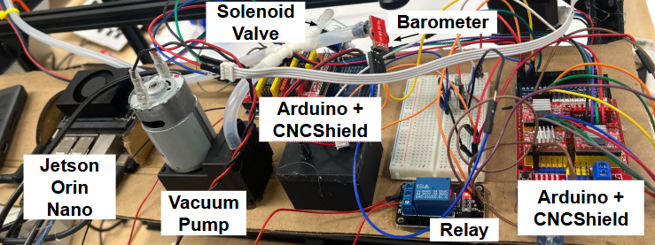

Trash-Sorting Gantry (Capstone)
In order to complete the ECE undergraduate degree, CMU students must demonstrate their knowledge through a capstone project. The goal is to create a new product or system that addresses a real-world need, while also showing sufficient technical complexity. For our capstone project, my teammates and I decided to create a machine that would sort recycling from trash going through a conveyor belt using computer vision and a 3-axis gantry.
Overall, my main role in the project was to create the robotic gantry system and program its movement to ensure it could pick up, move, and drop trash consistently (though I did help a little bit on the computer vision side as well).
Gantry design
Originally, we planned to base the gantry’s design on one we had been recommended, the 2xiDraw (link), however I ended up modifying the design several times due to our design constraint of making the gantry able to lift up to 1 lb.


Motion and actuation
To control the gantry’s xy movement, I wired up a CNCshield to some NEMA 17 stepper motors, and controlled the motions with an Arduino. This ended up being trickier than expected, as the standard control libraries prevented us from moving the motors too quickly, so I had to write up some lower-level control code in order to get it to work properly. The z-axis also used a stepper motor, however early on I found that the motor’s torque was not enough to lift the 1 lb object limit we set. Thus, I ended up designing and printing a custom geartrain, including a screw gear to convert rotational speed to torque and resist any weight pulling on the end-effector.

Pickup system
To pick up objects, I set up the arduino to control a vacuum pump via a relay, which would constantly run through a tube hooked up to the end-effector, a small suction cup. When the suction cup meets the object, the vacuum provides enough adhesion to lift up the object, even for porous surfaces like cardboard. In order to verify when the end-effector met the object, I also hooked up a barometer to the tube, and when the pressure decreased past a certain point, the gantry would know it had contacted the object.


Vision and calibration
In order to make sure that the vision system accurately tracked the object, I also had to custom calibrate the camera in order to dewarp the image and also translate the image coordinates to the real-world coordinates of the gantry.


The final paper is here: Team E2 Lin, Lu, Miranda – Final Report (PDF).